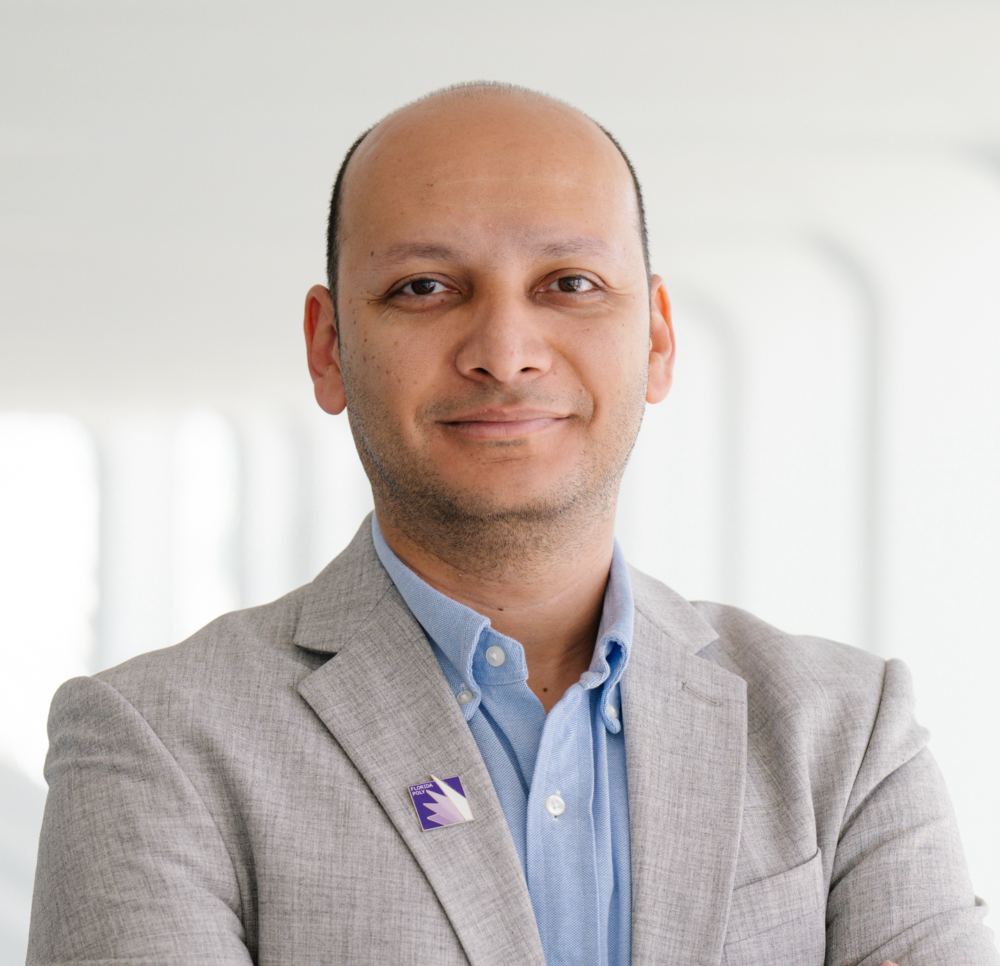

Dr. Karim Elish
Full Professor
Department of Computer Science
Florida Polytechnic University
Contact
BARC-2227, 4700 Research Way
Lakeland, FL 33805
Phone: +1 (863) 874-8646
Email: kelish at floridapoly.edu

Short Bio
I am a Full Professor in the Department of Computer Science at Florida Polytechnic University and Director of the NEXUS Lab, which focuses on secure, trustworthy, and intelligent software engineering through empirical and AI-driven research. At NEXUS, I have been fortunate to collaborate with and mentor students, including Fulbright scholars and graduate fellows.
Before joining Florida Poly, I held a faculty appointment as an Assistant Professor of Computer Science at Purdue University Fort Wayne. I am also a Fulbright Specialist, selected to the Fulbright Specialist Roster of the U.S. Department of State for 2025–present. In 2018, I received the Florida Poly ABLAZE Award for Excellence in Teaching, recognizing exemplary pedagogical practices, teaching effectiveness, contributions to course and program development, and sustained efforts to foster students’ intellectual growth and critical thinking. I am a Senior Member of ACM and IEEE.
Education
- Ph.D. in Computer Science, Virginia Tech, Blacksburg, VA, USA, 2015
- M.S. in Computer Science, Virginia Tech, Blacksburg, VA, USA, 2011
-
 M.S. in Computer Science, King Fahd University of Petroleum and Minerals, Saudi Arabia, 2008
M.S. in Computer Science, King Fahd University of Petroleum and Minerals, Saudi Arabia, 2008
-
B.S. in Computer Science, King Fahd University of Petroleum and Minerals, Saudi Arabia, 2006
Research Interests
- Software security, with a focus on mobile application security, malware detection, secure code analysis, and automated assurance;
- Software analytics and quality, including metrics, code smells, bug localization, and vulnerability detection;
- AI/ML for security and software engineering; and
- Broader topics in security, privacy, and software engineering.
Publications
All my publications are available on my Google Scholar . Selected publications can be found here .
Advising
Graduate Students
- Sebastian Siedler (Fulbright Graduate Fellow), Master's Student In progress
- Mohamed Sylla (Fulbright Graduate Fellow), Master's Student In progress
- Nicholas Carracino, Master's Student In progress
- Joyce Champie, Master's Student, 2026 Completed
- Nesreen Dalhy, Master's Student, 2025 Completed
- Vinicius Seixas, Master's Student, 2022 Completed
- Tito Leadon, Master's Student, 2022 Completed
- Vikranth Meka, Master's Student, 2018 Completed
Undergraduate Students
- Dennis Carey In progress
- Gurjas Chalana (Killam Fellowships, Fulbright), 2026 Completed
- William Blanc, 2021 Completed
Teaching
At Florida Polytechnic University, I teach a broad range of undergraduate and graduate courses spanning software engineering and cybersecurity. Over the years, I have designed and delivered courses that integrate hands-on practice, current technologies, and effective teaching methods. My teaching portfolio includes:
Undergraduate Courses
- CEN 4033 Secure Software Engineering
- CEN 4088 Software Security Testing
- CIS 4369 Web Application Security
- CEN 4010 Software Engineering
- CEN 4065 Software Design and Architecture
- COP 4656 Mobile Device Applications
- CEN 3820 Systems Analysis and Design
- COP 3710 Database I
- COP 3330C Computer Programming 2
- COP 4934 Senior Design 1 (Capstone I)
- COP 4935 Senior Design 2 (Capstone II)
Graduate Courses and Thesis
- CEN 5035 Advanced Software Engineering
- COP 5727 Advanced Database Systems Design
- CEN 5088 Advanced Software Security Testing
- IDS 5970 Thesis 1
- IDS 5975 Thesis 2
Selected Services
Editorial Service
- Guest Editor, Applied Sciences Journal, special issue on “Cybersecurity: Novel Technologies and Applications”, 2025-2026.
- Editorial Board Member, EAI Transactions on Security and Safety Journal: 2019-2021.
Program Committees & Conference Service
- Session Chair, IEEE/ACIS SERA, 2025.
- Conference Program Committee Member: KDD'26 AgenticSE Workshop, SecDev'26, SecureComm'20, SecureComm'19, ICPADS'19 Security & Dependable Computing Track.
Conference Reviewing
- Conference Reviewer: NeurIPS'26.
- External Reviewer: CCS'15, ASIACCS'15, CODASPY'15, ACSAC'15, CCS'14, ACSAC'14, ASIACCS'14, Inscrypt'13, ASIACCS'13, ISC'13, CODASPY'13, CNS'13, SecureComm'13, ACNS'12, GLOBECOM'11.
Journal Reviewing
- Reviewer: ACM Transactions on Software Engineering and Methodology, IEEE Transactions on Software Engineering, IEEE Transactions on Information Forensics and Security (TIFS), IEEE Transactions on Dependable and Secure Computing (TDSC), International Journal of Information Security, IEEE Transactions on Mobile Computing (TMC), IEEE Systems Journal, Journal of Information Security and Applications, IEEE Intelligent Transportation Systems, Computers & Security.
Grant & Panel Service
- Panel Reviewer, National Science Foundation (NSF), Cybersecurity Education Program, 2016.
University Service Activities at Florida Poly
- 2026: Member, University Curriculum Committee
- 2022-2025: CS Graduate Council Representative
- 2025: Member, Technology Transfer Steering Committee
- 2022-2025: Member, CS Search Committee
- 2024-2025: Member, CS Department Evaluation Panel for Reappointment and Promotion
- 2025: Member, ECE Department Evaluation Panel for Reappointment and Promotion
- 2024: Member, DSBA Department Evaluation Panel for Reappointment and Promotion
- 2018-2025: Member, CS Department Curriculum Committee
- 2022-2024: Chair, CS/DSBA Thesis and Graduate Project Review and Approval Committee
- 2023-2024: Member, Data Science & Business Analytics Search Committee
- 2024: Member, Faculty Evaluation Committee
- 2023-2024: Member, Cybersecurity Engineering Search Committee
- 2023: Member, ECE Search Committee
- 2020, 2022, 2023: Member, ABLAZE Excellence in Teaching Award Selection Committee
- 2023: Member, Institutional Effectiveness Committee
- 2022: Judge, Senior Capstone Projects Showcase
- 2021-2022: Member, CS Curriculum and Assessment Committee
- 2022: Member, Cybersecurity Engineering Program Committee
- 2019-2021: Member, CS Academic Excellence and Teaching Quality Committee
- 2017: Member, Instructor Search Committee